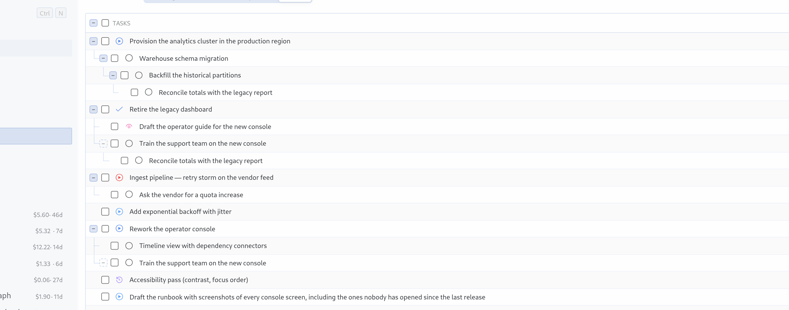
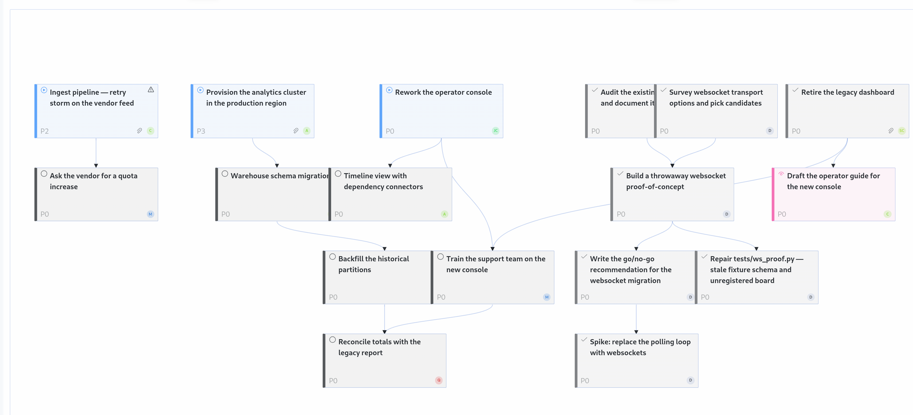

<template id="s4-template">
  <div data-composition-id="s4" data-width="1920" data-height="1080">
    <div class="stage">
      <div class="pane p1">
        <div class="head"><span class="word">List</span><span class="cap">One line per task, grouped by project, status included.</span></div>
        
      </div>
      <div class="pane p2">
        <div class="head"><span class="word">Graph</span><span class="cap">One card per task, one arrow per link.</span></div>
        
      </div>
    </div>
    <style>
      [data-composition-id="s4"] { width: 100%; height: 100%; background: #efe9dc; color: #16130f; }
      [data-composition-id="s4"] .stage { position: relative; width: 100%; height: 100%; perspective: 1800px; }
      [data-composition-id="s4"] .pane { position: absolute; inset: 0; padding: 64px 96px; display: flex; flex-direction: column; backface-visibility: hidden; }
      [data-composition-id="s4"] .head { display: flex; align-items: baseline; gap: 40px; }
      [data-composition-id="s4"] .word { font-family: "Playfair Display", Georgia, serif; font-weight: 900; font-size: 76px; line-height: 1; letter-spacing: -0.03em; }
      [data-composition-id="s4"] .cap { font-family: "Archivo", Helvetica, sans-serif; font-size: 25px; color: rgba(22,19,15,0.85); max-width: 780px; }
      [data-composition-id="s4"] .shot { margin-top: 26px; width: 1728px; height: 600px; border: 1px solid rgba(22,19,15,0.25); display: block; }
      [data-composition-id="s4"] .cover-l { object-fit: cover; object-position: left top; }
      [data-composition-id="s4"] .cover-c { object-fit: cover; object-position: left center; }
    </style>
    <script>
      (function () {
        const tl = gsap.timeline({ paused: true });
        const q = (sel) => '[data-composition-id="s4"] ' + sel;
        const p1 = q(".p1"), p2 = q(".p2");
        gsap.set([p1, p2], { transformStyle: "preserve-3d" });
        tl.set(p2, { autoAlpha: 0, rotationY: 95 }, 0);
        tl.from(p1, { autoAlpha: 0, rotationY: -55, duration: 0.5, ease: "power2.out" }, 0.05);
        tl.to(p1, { autoAlpha: 0, rotationY: -95, duration: 0.42, ease: "power2.in" }, 2.85);
        tl.to(p2, { autoAlpha: 1, rotationY: 0, duration: 0.5, ease: "power2.out" }, 2.95);
        window.__timelines = window.__timelines || {};
        window.__timelines["s4"] = tl;
      })();
    </script>
  </div>
</template>
